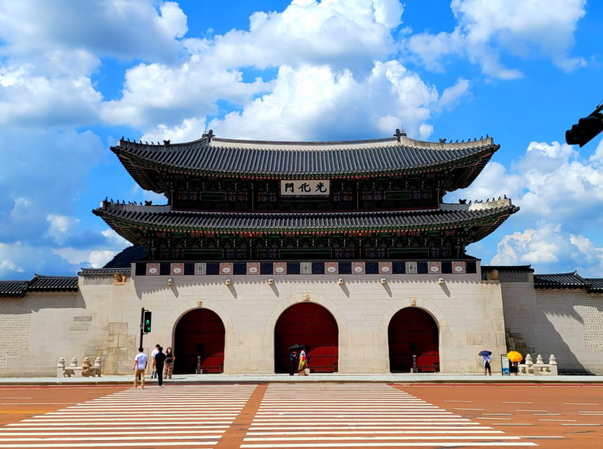
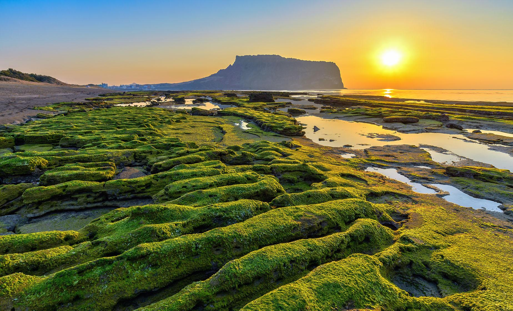

Informacje ogólne
Południowa Korea, oficjalnie Republika Korei, to kraj w Azji Wschodniej, położony na południowej części Półwyspu Koreańskiego. Graniczy z Koreą Północną na północy, a na wschód i zachód oblewają ją wody Morza Japońskiego i Morza Żółtego. Seul jest stolicą kraju, który jest jednym z najdynamiczniej rozwijających się państw na świecie.
Geografia
Rzeźba terenu
Korea Południowa to kraj o zróżnicowanej rzeźbie terenu. Większość obszaru to górzyste wyżyny i pasma górskie, szczególnie w środkowej i wschodniej części. Najwyższym szczytem kraju jest Halla-san (1950 m n.p.m.), wulkan położony na wyspie Jeju. W zachodniej części kraju znajdują się równiny oraz obszary nadmorskie. Główne rzeki to Han oraz Nakdong
| Jezioro | Powierzchnia [km2] | Głębokość [m] |
|---|---|---|
| Chungju | 80 | 40 |
| Soyang | 56 | 60 |
| Uiam | 28 | 32 |
| Paldang | 40 | 35 |
Klimat
Korea Południowa znajduje się w strefie klimatu monsunowego, z wyraźnymi czterema porami roku: Lato (od czerwca do sierpnia) jest gorące i wilgotne, z opadami deszczu wynikającymi z monsunu letniego. Zima (od grudnia do lutego) jest chłodna, ale nie ekstremalnie zimna, z opadami śniegu, szczególnie na północy kraju. Wiosna i jesień są łagodne, a w szczególności jesień jest czasem, gdy krajobraz kraju przybiera spektakularne kolory.
Atrakcje turystyczne
Pałace, pustynie, wyspy

Pałace Seulu
W stolicy Korei Południowej znajduje się kilka wspaniałych pałaców, w tym Gyeongbokgung oraz Changdeokgung, które są nie tylko zabytkami, ale także wspaniałymi przykładami tradycyjnej architektury koreańskiej.

Jeju
Znana z pięknych plaż, wulkanicznych krajobrazów i unikalnej kultury. Jeju jest jednym z najważniejszych miejsc turystycznych w Korei Południowej. Jest również popularnym miejscem dla par, które wybierają się tam na miesiąc miodowy.